Dicas para Iniciantes
Consiga Materiais
Assim que iniciar sua primeira partida, você será colocado em um mundo totalmente aleatório e cheio de possibilidades. Como não tempo a perder, procure por algumas árvores e use seus punhos até destruir parte da madeira. Isso lhe dará alguns blocos de madeira, sendo que o mesmo pode ser feito com qualquer material que encontrar no cenário: terra, pedras, grama, carvão, cogumelos, etc.
Sugerimos que já tente conseguir um pouco de tudo o que mencionamos acima, mas o primeiro item realmente deve ser a madeira. Precisaremos dela para muitas coisas, mas principalmente para a nossa segunda dica.
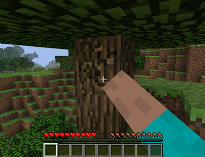
Conseguindo madeira - Fonte: Página oficial do Minecraft, 2022
Faça Mesa de Trabalho
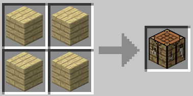
Quando conseguir alguns pedaços de madeira, abra seu inventário e coloque pelo menos uma madeira na grade de criação do menu. Isso lhe dará o item “Tábua de madeira”, que usaremos para construir nossa Bancada de Trabalho.
A Bancada necessita de quatro tábuas de madeira, uma em cada quadrado da grade de criação. Este item nos ajudará a criar todos os outros itens do game, já que oferece uma grade de criação bem maior.
Mesa de Trabalho - Fonte: Página oficial do Minecraft, 2022
Crie Ferramentas
Agora que temos nossa Mesa de Trabalho, é hora de criar as ferramentas. Você pode fazer todas as ferramentas básicas se quiser, mas a sugestão é que tenha pelo menos a picareta e o machado. Isso vai ajudar a coletar materiais com muita facilidade e rapidez, mas esses itens vão se esgotando e se quebram com o uso, então sempre lembre-se de fazer algumas ferramentas extras.
As ferramentas básicas são as de madeira que duram menos que as demais, a partir da picareta de madeira é possível minerar blocos de pedra para criar ferramentas de pedra, depois ferro, ouro, diamante e assim sucessivamente.
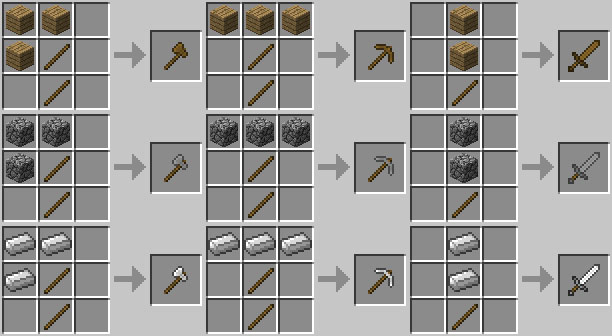
Criando Ferramentas - Fonte: Página oficial do Minecraft, 2022
Faça um Baú e uma Fornalha
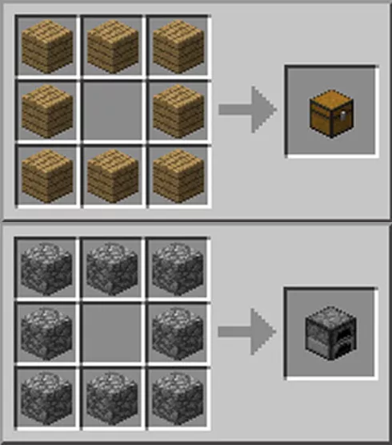
Agora que estamos construindo tantos itens, você começará a perceber que não há muito espaço no seu inventário, ainda mais se for coletar todos os materiais que encontrar pela frente. Para facilitar sua vida, simplesmente use a Mesa de Trabalho para criar um baú. Desta forma, você poderá guardar diversos itens por lá sem se preocupar, só lembre de deixar o baú em um local seguro, os itens quando guardados no baú permanecem em segurança, já que se o jogador for eliminado derruba todos os itens que está carregando em seu inventário, portanto é aconselhável carregar somente o necessário.
Após minerar tantos blocos também perceberá que muitos minérios podem ser processados para criar outros itens, e para processar os minérios será necessário a criação de uma fornalha.
Baú e Fornalha - Fonte: Página oficial do Minecraft, 2022
Crie um Abrigo
Agora que temos alguns itens básicos e materiais coletados, é hora de construir o primeiro abrigo. Ele não precisa ser grandioso ou cheio de detalhes e nem uma mansão, já que só servirá realmente para te manter seguro à noite.
Se tiver tempo, pode construir uma casa pequena ou até mesmo um sobrado grande se estiver com materiais e tempo, mas um simples buraco no chão pode ser bom o suficiente ou também uma caverna em alguma montanha. Só é importante que você o mantenha fechado, seja com blocos ou com portas para impedir a invasão de inimigos durante a noite.
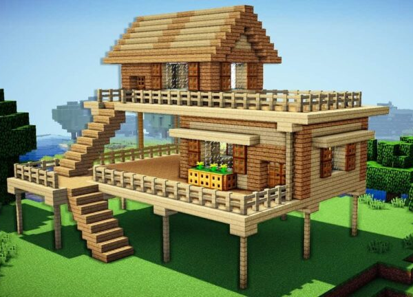
Abrigo - Fonte: Página oficial do Minecraft, 2022
Faça Tochas
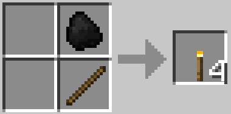
Caso seu primeiro abrigo seja totalmente fechado, o que é uma boa ideia, é importante ter tochas dentro de casa para que se consiga enxergar. Fora que as luzes também são úteis se você quiser criar uma caverna abaixo do abrigo, o que geralmente muitos fazem, para explorar sem sair do perímetro da casa. Além de iluminar dentro do abrigo, as tochas são ótimas para iluminar aos arredores dele, já que são bons sinalizadores para ajudar à avistar a casa de longa distância pela iluminação em caso de se perder longe do abrigo a noite. Para fazer tochas, basta ter um graveto e um carvão.
Tocha - Fonte: Página oficial do Minecraft, 2022
Busque Alimentos
O nível de fome é um dos aspectos mais importantes do jogo e determinará a maneira que os pontos de vida funcionam. Há duas barras: uma representada por pedaços de carne (sua fome) e outra por corações (sua saúde). Com a barra de fome cheia, a barra de vida se regenera automaticamente após ser atacado, sendo que é possivel pode comer para restaurar a saúde imediatamente.
Caso a barra de fome não esteja cheia, a saúde não irá se regenerar, já que todo alimento consumido será usado só para saciar a fome do personagem. Caso a barra da fome se esvaziar completamente, o pontos de saúde começaram a decair. No caso, a fome decai conforme realiza qualquer tipo de tarefa, para recuperar deve-se comer carnes, legumes e frutas.
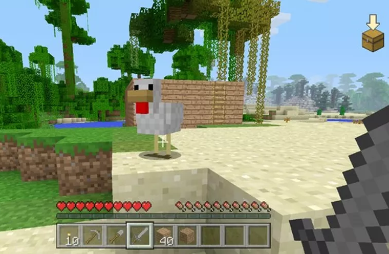
Caçada - Fonte: Página oficial do Minecraft, 2022
Não saia à Noite
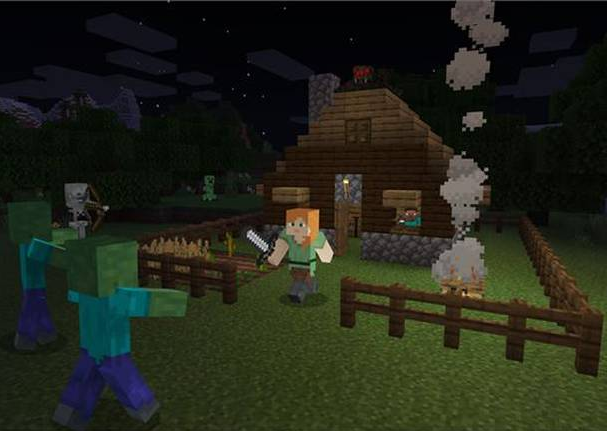
Sair para explorar seu mundo de Minecraft durante a noite é uma péssima idéia quando se é um iniciante no jogo. Podemos garantir que vai encontrar diversos inimigos diferentes e eles vão matar seu personagem antes que você saiba o que está acontecendo.
Não vale a pena perder todos os seus itens e materiais desta maneira, então fique no seu abrigo até o amanhecer. Fora isso, há coisas mais importantes para se fazer durante à noite, como veremos na dica à seguir.
Noite - Fonte: Página oficial do Minecraft, 2022
Abra uma Caverna abaixo do Abrigo
Aproveite a noite de Minecraft para abrir uma caverna abaixo de seu abrigo. Geralmente se consegue materiais bem mais raros e valiosos nas profundezas das terras de Minecraft como carvão, minérios de cobre, de ferro, de ouro, de diamante, etc, então vale a pena explorar.
Só não é aconselhável cavar muito fundo nas suas primeiras explorações já que poderá acessar fendas cheias de inimigos que vivem nas profundezas além do risco de se cair em poços de magma, locais esses onde poderá ter todos os itens derretidos e não esqueça de levar várias tochas para iluminar a escuridão e algumas ferramentas extras no caso das suas quebrarem com o uso constante.

Caverna - Fonte: Página oficial do Minecraft, 2022
Prestar Atenção aos Sons
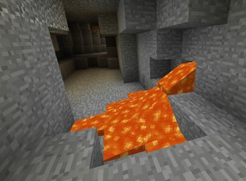
Enquanto estiver minerando na caverna, preste muita atenção aos sons que ouvir à sua volta. Eles podem significar coisas muito importantes e que podem te matar: lava e monstros. São coisas que os veteranos reconhecem de longe, mas os iniciantes em Minecraft podem demorar para se habituar.
Os barulhos de monstros são óbvios (passos ou algo parecido como zumbis gemendo) e o som da lava parece praticamente com água corrente. Esses sons podem ser ouvidos de longe, mas vão aumentando conforme sua aproximação. Nossa sugestão é que se afaste quando ouvir qualquer barulho, já que não há como saber quantos monstros estarão por perto e não é possível fugir da lava mesmo quando se é experiente.
Carvena com Magma - Fonte: Página oficial do Minecraft, 2022
Faça uma Cama
Com certeza um dos passos mais importantes para sobrevivência no jogo é a criação de uma cama. Pois ela funciona como um ponto de salvamento e também para passar a noite mais rápido no jogo. Para criação da cama são necessários três tábuas de madeira e três blocos de lã, a lá pode ser coletada ao abater ovelhas ou por simplismente cortar usando uma tesoura. Também é possível criar camas em outras cores utilizando tintas de flores para tingimento.
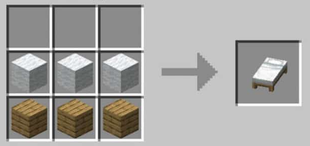
Cama - Fonte: Página oficial do Minecraft, 2022
No Minecraft há dois pontos de reinício do jogador, sendo o primeiro no ponto zero aleatório do personagem no mapa quando se inicia o mapa pela primeira vez e o ponto salvo na cama. Na última cama dormida é sempre definido como ponto de salvamento. Caso a cama seja destruída, esse ponto de salvamento é eliminado, e em caso do jogador eliminado no jogo, ele reiniciará então para o ponto zero em que foi iniciado o jogo, ou seja, longe de seus itens, suas contruções ou até mesmo de alguma vila que tenha encontrado. Por isso é sempre recomendado que deixe o ponto salvo em alguma cama próxima do baú com seus itens antes de sair para uma exploração, pois em caso da cama ser destruida, poderá ser reiniciado muito distante dos itens que deixou cair e que conquistou com seu esforço.
Faça uma Plantação
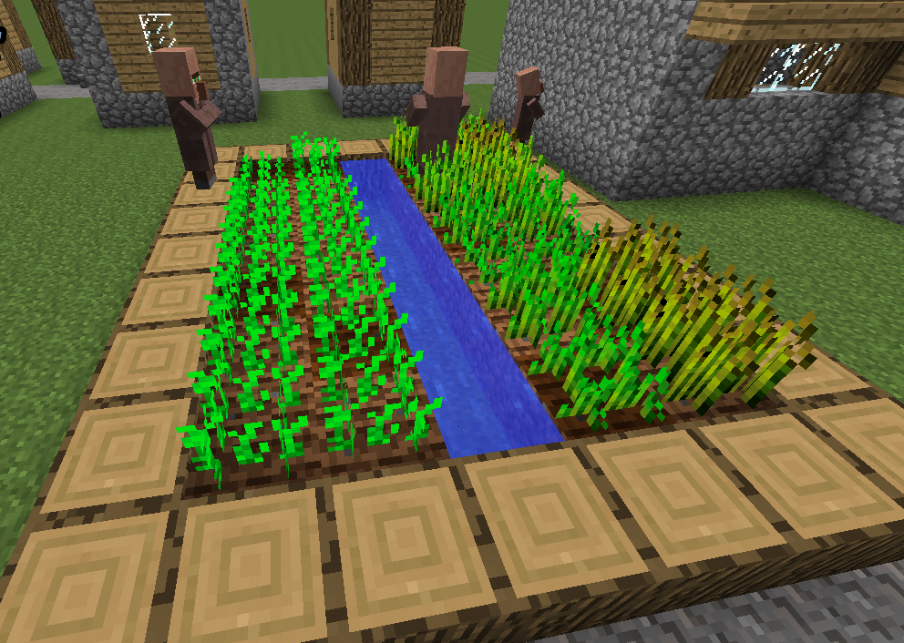
Enquanto estiver coletando materiais, eventualmente encontrará sementes que poderão ser plantadas com a ajuda de uma enxada. Elas crescerão e se transformarão em alimento, que podem ser usados para atrair animais ou como objetos de troca com aldeões. Para iniciar a plantação deverá arar a terra com a enxada, assim que preparada a terra adeverá esplahar as sementes sobre ela, para o crescimento a plantação precisará de água, com ajuda de um balde deverá coletar água em algum lago ou riacho e colocá-la ao lado da terra arada de modo que fique empoçada, e para isso buracos são cavados ao lado da plantação. Além disso a plantação deverá ficar em lugar aberto com luz, para acelerar o cresimento, sombras atrasam o crescimento das plantas.
Plantação - Fonte: Página oficial do Minecraft, 2022
Busque Animais
Falando em animais, é importante mencionar que você pode fazer sua própria fazenda com vacas, galinhas, porcos, ovelhas, cavalos, etc. Os animais podem te seguir se atraídos com alimentos, como galinhas são atraídas por sementes, vacas e ovelhas por maços de trigo, porcos por cenoura, etc.
Também é possível reproduzí-los, para isso basta criar uma cerca em volta dos animais quando estiverem no local certo oferecendo os respectivos alimentos para ambos então em seguida irão se reproduzir. Você também pode abatê-los com suas ferramentas para conseguir carne.
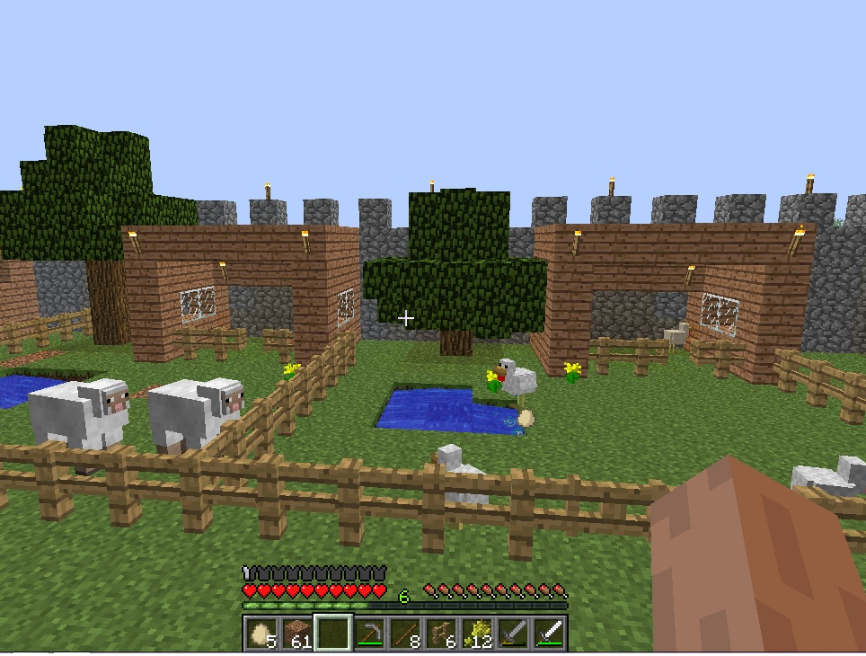
Animais no cercado - Fonte: Página oficial do Minecraft, 2022
Crie Armas e Armaduras
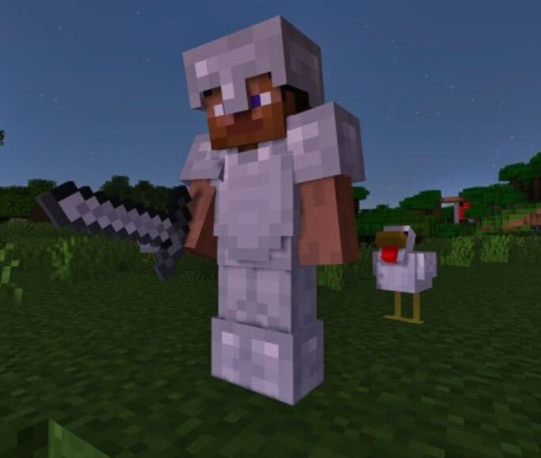
Agora que você já tem um abrigo, ferramentas e maneiras de se alimentar, é hora de pensar em se defender e atacar. Afinal, os iniciantes em Minecraft não podem simplesmente sair por aí sem armaduras e armas, de preferência de bons materiais. O ideal é que você comece com ferro ou ouro, por exemplo, se já tiver encontrado algum desses materiais.
Com uma armadura de metal equipada, uma espada na mão e um escudo na outra, você já poderá começar a pensar em enfrentar inimigos com eficiência. Aproveite nossa dica sobre alimentação para sempre ter alguns pedaços de comida em seu inventário caso seja atacado.
Armado para Batalha - Fonte: Página oficial do Minecraft, 2022
Explore o Mundo
Com tudo isso, você já vai ter aprendido quase tudo que os iniciantes em Minecraft precisam e poderá começar a explorar o mundo à sua volta sem tanto receio. Ainda será importante ter cuidado e prestar atenção nos detalhes mencionados neste blog, já eles são bem importantes para garantir sua sobrevivência e seu progresso no jogo.
Além disso, lembre-se de construir pequenos abrigos em diversos lugares e de enfrentar monstros em pequenos grupos de cada vez. Desta forma, você estará seguro e terá mais experiências diferentes no jogo. Agora que você já é quase um veterano, siga os tutorias abaixo e explore sua critividade e esse mundo de possibilidades.
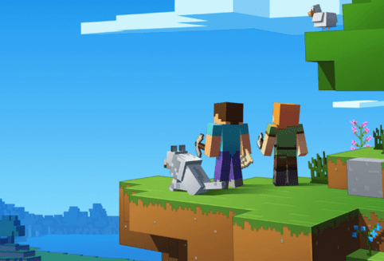
Explore o Mundo - Fonte: Página oficial do Minecraft, 2022
Tutoriais Básicos
Agora que você já aprendeu as principais dicas de iniciantes e alguns tutoriais iniciais, chegou o momento de ir um pouco além com os tutoriais básicos abaixo que podem ajudar em sua jornada de exploração do mundo de Minecraft.
Tábuas de Madeira |
Gravetos |
Portas de Madeira |
Papéis |
| 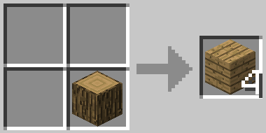 |
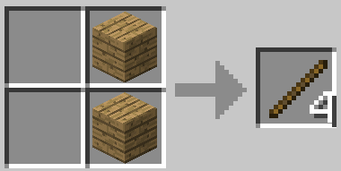 |
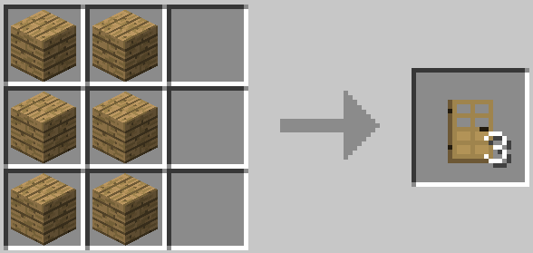 |
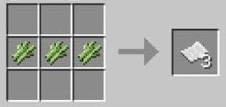 |
Escadas de Madeira |
Janelas de Vidro |
Cercas de Madeira |
Portão de Madeira |
| 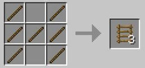 |
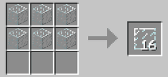 |
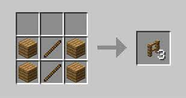 |
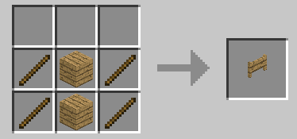 |
Livro |
Estante de Livros |
Barco de Madeira |
Bússola |
| 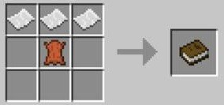 |
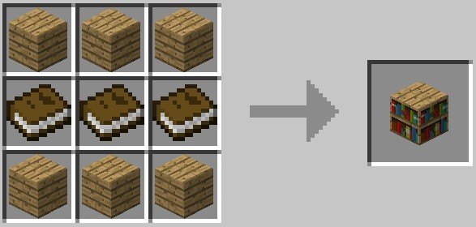 |
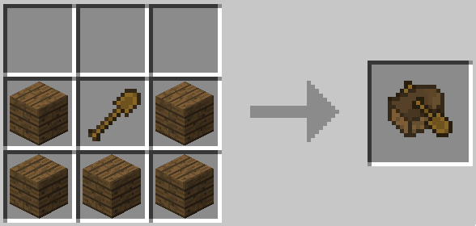 |
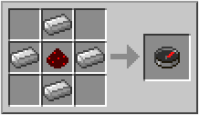 |
Mapa |
Garrafas |
Fogueira |
Sela |
| 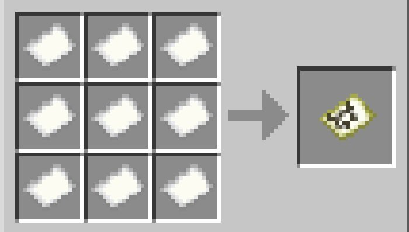 |
|
|
|
Balde de Ferro |
Grades de Ferro |
Arco |
Flechas |
|
|
|
|
Vara de Pescar |
Bigorna |
Tesoura |
Isqueiro |
|
|
|
|
Trilhos |
Placas de Madeira |
Bloco de Feno |
Suporte de Armadura |
|
|
|
|
Lajes de Madeira |
Composteira |
Quadro |
Livro de Receitas |
|
|
|
|
Carrinho de Ferro |
Relógio |
Degraus de Madeira |
Degraus de Pedra |
|
|
|
|
Caldeirão |
Alavanca |
Alçapão de Madeira |
Defumador |
|
|
|
|
Açúcar |
Pão |
Biscoitos |
Bolo |
|
|
|
 |
 |
Todo o conteúdo, títulos de jogos, nomes comerciais, trabalhos artísticos e imagens associadas são marcas registradas e/ou material de copyright de seus respectivos donos. Todos os direitos reservados. |